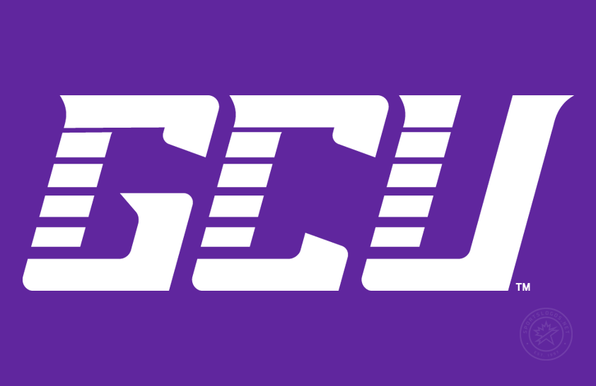
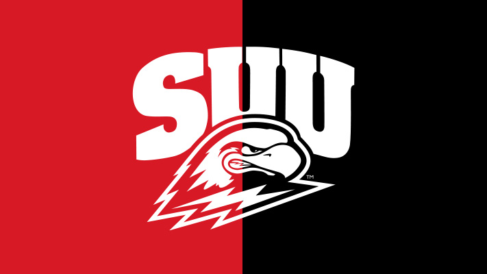
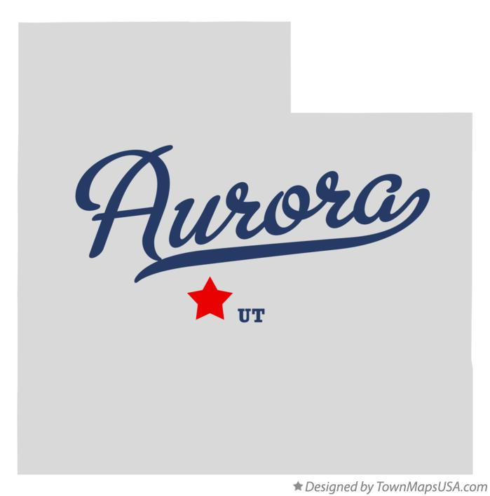
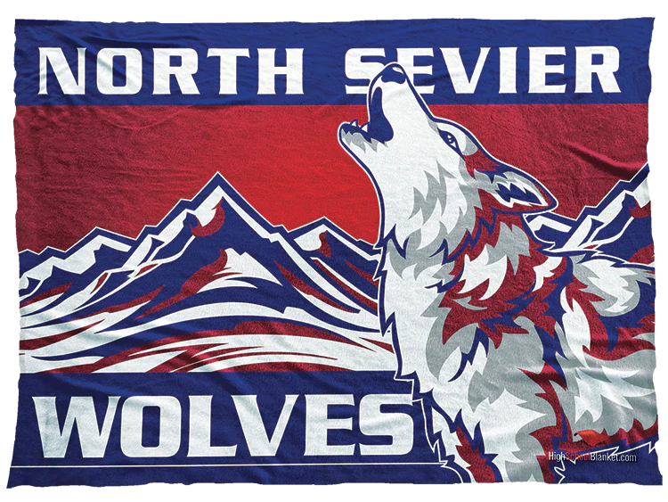

Hello and welcome to my website! My name is Kendall and I am from a small town in Aurora, Utah. I graduated high school from North Sevier High School. I then went on to attend Southern Utah University and graduate with my bachelor's degree in Biology. I got married in 2014 and have two beautiful girls, age 6 and 4. We also have two dogs, Roscoe and Otto.
After school I had a hard time applying my degree and ended up working for a company called CompHealth. I then decided I wanted to try and further my education and go back to school. I had always been interested in coding and technology so I decided to get a degree in software development. I applied to Grand Canyon University. Once accepted I decided to go through with it and get my bachelor's in software development. After school I'm hoping to join a company to gain experience and hopefully work my way up to a lead position. After I am hoping to build an app or start a project of some kind.
In my free time I enjoy:
   